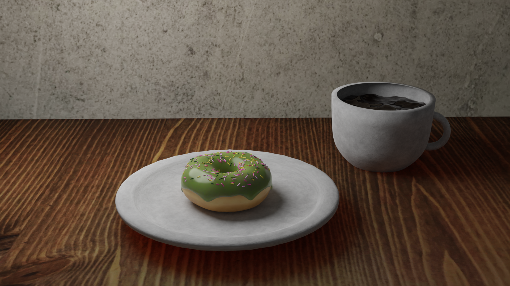
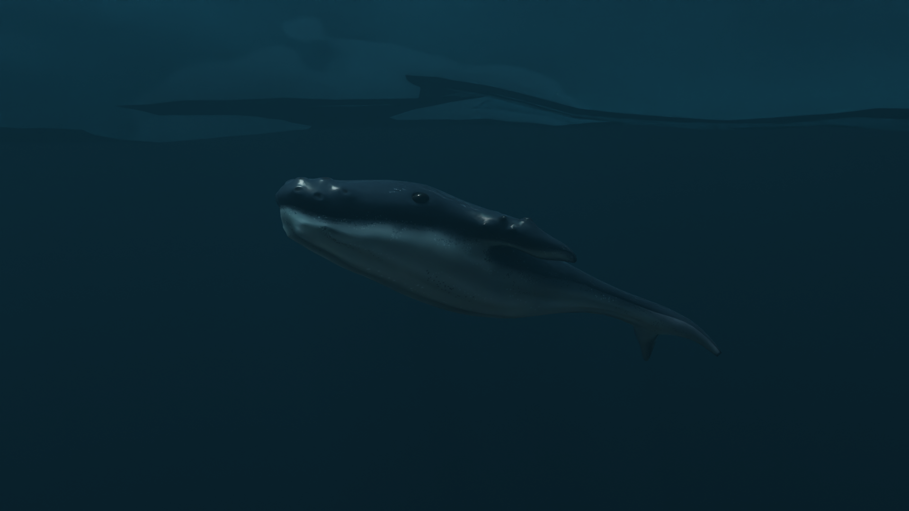

3D Modeling



Im a second year student at Turku University of Applied Sciences.
I'm studying Business IT (Bachelor of Business Administration IT).
My specialization field is software development and information systems.